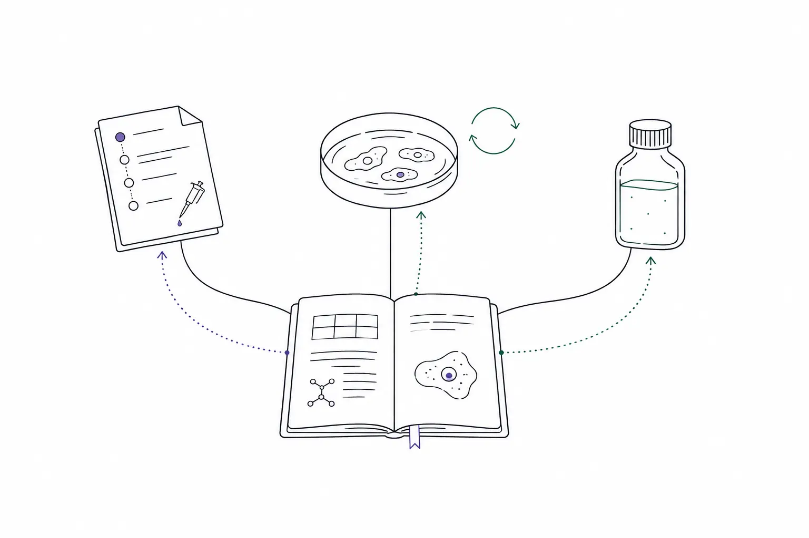

Database数据库データベース
- 01
Manage protocols, cells, and reagents in Pasero
- 02
See where each protocol, cell, or reagent was used—reducing information errors as experiments accumulate
- 01
在 Pasero 管理 Protocol、细胞和试剂
- 02
查看每个 Protocol、细胞或试剂被用在哪些实验里，减少实验次数增多后的信息错误
- 01
Pasero で Protocol、細胞、試薬をまとめて管理
- 02
どの Protocol・細胞・試薬をどの実験で使ったかを追跡し、実験が増えても情報の取り違えを防ぎます
